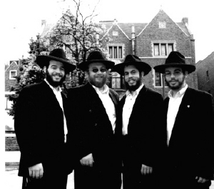
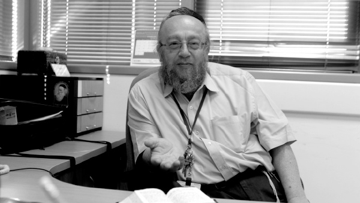

יעקב כץ
הרב יעקב כץ נושא בשני ‘כובעים’ – הרוקח הראשי של משרד הבריאות במחוז המרכז, ושליח לא-רשמי של הרבי במשרד הבריאות. שני התפקידים מלאי אתגר, מסקרנים שמניבים סיפורים מרתקים מהחיים • בשיחה מרתקת ל”בית משיח” מספר הרב כץ על תולדות חייו בעיירה קטנה באנגליה ומסע התקרבותו לרבי מלך המשיח, על תפקידו כרוקח ראשי וחס
הרב יעקב כץ נושא בשני ‘כובעים’ – הרוקח הראשי של משרד הבריאות במחוז המרכז, ושליח לא-רשמי של הרבי במשרד הבריאות. שני התפקידים מלאי אתגר, מסקרנים שמניבים סיפורים מרתקים מהחיים • בשיחה מרתקת ל”בית משיח” מספר הרב כץ על תולדות חייו בעיירה קטנה באנגליה ומסע התקרבותו לרבי מלך המשיח, על תפקידו כרוקח ראשי וחסיד שמתהלך בקרב ‘אצולה’ רפואית משכילה ורחוקה מיהדות •וְיַעֲקֹב רֹקַח מַעֲשֵׂה רוֹקֵחַ
ראיין: נתן אברהם
צילום: מאיר אלפסי

מחזה הבא שנגלה לעיני, היה לא פחות ממדהים. מחוץ לבניין “אגודת חסידי חב”ד – 770” בכפר חב”ד, חנו בזה אחר זה שורה ארוכה של רכבי פאר יוקרתיים, מתוכם יצאו יהודים בגיל העמידה בעלי חזות מכובדת, מחישים צעדיהם ונבלעים בפנים. הם פונים לחדר האחרון בקומה הראשונה לשיעור חסידות שבועי שיחל בתוך דקות ספורות, אותו ימסור כבכל שבוע השליח באור יהודה הרב שלמה כץ.
מי שמארח ומארגן את השיעור זה עשר שנים ברציפות, הוא אביו הרב יעקב כץ. תפקידו הרשמי הוא הרוקח הראשי של מחוז מרכז במשרד הבריאות, בתפקידו הפחות רשמי הוא שליח הרבי מלך המשיח במשרד הבריאות. משתתפי השיעור הם רובם ככולם רוקחים בכירים שבאים הנה מכל ערי המרכז, כאלה שלא חונכו על ברכי היהדות הצרופה וחלקם אף חונכו לשנוא. אלו ואלו יעשו הכול בכדי לא להחמיץ אף לא שיעור אחד.
“אותם רוקחים פתחו לאחרונה פורום וירטואלי בו הם מכנים את עצמם ‘רוקחים חסידי חב”ד’”, מספר הרב כץ בהתלהבות בלתי מוסתרת. “רק לחשוב שמרביתם נולדו בבולגריה וברומניה ומעולם לא קיבלו חינוך יהודי. יש בהם גם קיבוצניקים שאפילו בר מצווה לא חגגו, אך כיום הם ידחו טיסות, יוותרו על פגישות חשובות, ולו בכדי לא להפסיד את השיעור השבועי”.
התופעה היא מפעימה ומרגשת כאחד, אך מסתבר שהשיעור הוא פן אחד מתוך פעילות יהודית ענפה שמתקיימת במחוז מרכז של משרד הבריאות תחת הכוונתו של הרב כץ – חסיד חביב הליכות ונעים סבר, אך כזה שלא חת מפני איש והולך בגאווה רבה עם האמת הפנימית החסידית שלו.
מאיפה ינקת את כוחות ותעצומות הנפש? שאלתי ושמעתי ממנו על מסכת קירובים נפלאה שזכה לקבל מהרבי, לצד תשובות ברורות שהתוו את דרכו בחיים עד לתפקידו הנוכחי.
את הרב כץ, “יענקלה”, בשפת חבריו, פגשנו בלשכתו שבבניין משרד הבריאות ברמלה. רק לפני דקות ספורות הדי המולת הנכנסים והיוצאים הורגשה כאן היטב; קולגות, אנשי משרה, רוקחים ורופאים באו ונכנסו במשרדו של מי שהוא המילה האחרונה במשרדו. פגשנו חסיד מלא באנרגיה, ממוקד ופעיל נמרץ הזוכה מדי יום לקדש שם ליובאוויטש.
בסנדלנד הקטנה נפגשתי לראשונה עם יהדות
יענקלה נולד בתחילת שנות היודי”ם בעיירה קטנה סמוך ללונדון אליה ברחו סבו וסבתו מהבליץ שהנחיתו הגרמנים על בירת אנגליה. משפחתו הייתה מסורתית במושגים של אותם ימים. בית כנסת, צום ביום הכיפורים, אך בד בבד ההורים שלחו את ילדיהם לבתי ספר עממיים והלכו בגילוי ראש.
“באותם ימים כמעט ולא היו בתי ספר של יהודים”, הוא מגונן על הוריו ומספר שסבו מצד אמו, על-אף שנהג כחופשי בהליכותיו, יסד בית הכנסת בטענה שהוא לא יכול לחיות בעיר שאין בה בית כנסת. לאחר שיסד את בית הכנסת, חיפש הסב מי שיוכל לנהל את המקום ולשמש כחזן ובעל קורא. היהודי שנמצא מתאים, קיבל מסבי משכורת חודשית הגונה ומקום מגורים בתוך ביתם של סבא וסבתא”.
אותו רב מסתבר גם דאג לשידוכי בתו של הסבא, הלא היא אמו של הרב כץ. “‘מדוע בתך אינה משתדכת?’ שאל הרב את סבי, והוא ענה שלאחר המלחמה היה קשה למצוא צעירים יהודים הגונים. אותו רב סיפר לסבי על בן-דוד רווק שיש לו. סבי הסכים לבדוק זאת, הוריי נפגשו התאימו ולבסוף נישאו. אבי אמנם לא היה בהגדרה ‘דתי’, אך כיוון שבא ממשפחה דתית מאוד, הוא היה מניח תפילין ומקפיד עד כמה שיכול היה בדיני כשרות”.
באותן שנים היהדות החרדית באנגליה הייתה מעטה מאוד. רק מעטים הקפידו על קלה כבחמורה. יהודים רבים התערבו בין הגויים. את שנות הלימודים בבית הספר מתאר כץ כפארסה אחת גדולה. “היום קוראים לזה ADHD, אבל אז הוכתרתי כ’שובב הכיתה’”.
תחילת ההתקרבות לדרך התורה החלה לנבוט לאחר היכנסו לעול המצוות. “התפילין כנראה עוררו אצלי משהו חבוי. אבי סיפר לי על מצוות אלה ואחרות. התחלתי לקרוא ספרים יהודים והתעניינותי ביהדות הלכה וגברה מיום ליום. כבר בגיל נערות התחלתי לשמור שבת עד כמה שידעתי וניסיתי לשמור על מה שיכולתי וידעתי.
“עיקר ההתחזקות הרצינית שלי החלה כשסיימתי את לימודיי בתיכון. לשם כך נדדתי הרחק מבית הוריי לעיירה סנדלנד הנמצאת בסמוך לסקוטלנד. הגעתי לשם כדי ללמוד את מקצוע הרוקחות, מקצוע ששמעתי שניתן להרוויח ממנו יפה.
“בסנדלנד מצאתי זוג שלוחים צעירים, חסידי חב”ד שנשלחו על ידי הרבי – הרב יהודה רפסון ורעייתו. הוזמנתי אליהם בשבתות ובחגים והייתי מוקסם. לראשונה בחיי חוויתי את החוויה היהודית במלוא עוצמתה. אחי אף הוא מאוד התקרב ליהדות, והכיר לי את רבו הרב שמואל לו, שאף הוא הגיע ללונדון בשליחות הרבי. משניהם שמעתי לראשונה על הרבי ועל חסידות חב”ד.
“תהליך ההתקרבות אירע לצד השקעה רבה בלימודי הרוקחות”
בעיר סנדלנד פעל גם רב הנמנה על הפלג הליטאי, ממשפחת ערנטריי, והוא עמד בראש ישיבה שפעלה בעיר. כץ מספר שמפגשיו איתו אף הם השפיעו עליו רבות. “יום אחד נפגשנו, היה זה לאחר שסיימתי תואר ראשון בלימודי רוקחות, והוא אמר לי, ‘יענקלה, אתה צריך להיכנס ללמוד בישיבה’. דבריו הבהילו אותי. ‘מה פתאום ישיבה?’ אמרתי, ‘אני יודע מספיק בשביל להיות יהודי טוב’. אך הוא התעקש ואני נכנסתי ללמוד זמן מה בישיבתו.
“בספרייה של הישיבה מצאתי ספרים בשפה האנגלית, שבאחד מהם הובאו צרור סיפורי חסידים. קראתי את הספר מתחילתו ועד סופו והרגשתי שנשמתי נמשכת לזה.
“כשעזבתי את סנדלנד, חזרתי ללונדון ובחרתי להתיישב בשכונת גולדסגרין. הדבר הראשון שעשיתי זה חיפוש אחר בית הכנסת או ישיבה, וגם שם פגשתי בחסידי חב”ד, שלוחי הרבי, בין היתר את הרב הרשל גולדמן, מי שתרגם את ספר התניא לאנגלית.
“לאחר כמה שיחות בינינו, הוא הציע לי לטוס לרבי. אני שכבר ידעתי דבר אחד או שניים על הרבי, הודעתי לו שאני לא מוכן להיראות במחיצת הרבי מבלי ללמוד קודם לכן בישיבה במשך שנה לפחות. הייתי בעל תשובה ‘טרי’ שפעל מתוך רגש. הרב גולדמן שמח על הגישה שלי, והייתה לו בעבורי הצעה מעשית: לעלות לארץ ישראל ולהיכנס ללמוד בישיבה של הרב שניאור זלמן גפני בכפר חב”ד – ‘אור התמימים’.
מה תפס אותך בליובאוויטש? הרי בעת שהותך בסנלנד למדת גם בישיבה ליטאית?
לאחר הרהור ממושך, אומר כץ: “היה שם רגע אחד מכונן. זה היה כמה חודשים לפני מלחמת יום הכיפורים. השליח הרב רפסון חילק מטבעות של צדקה לילדי העיר היהודים, והודיע שהרבי מליובאוויטש מסר שיש קטרוג על ארץ ישראל וביקש שיתנו צדקה ויתפללו. אף אחד לא הבין על מה המהומה. היו אף שהרימו גבה והתייחסו בביטול לדברים. אך המציאות היתה שביום הכיפורים באותה שנה פרצה מלחמה, ואני זכרתי היטב את דברי הרבי. או אז הבנתי שהרבי הוא לא עוד רב, אלא מנהיג שדברי ה’ יוצאים מגרונו”.
בתחילת שנת תשל”ו עלה יעקב כץ ארצה, וכעצת הרב גולדמן נכנס ללמוד בישיבת ‘אור תמימים’ בכפר חב”ד. “קשיי התחלה לא היו חסרים, אך הייתי נחוש בדרכי. לא ידעתי עברית ולא אידיש ותקופת ההתאקלמות הייתה מורכבת, אך יאמר לשבחו של הרב גפני שהוא עשה הכול כדי להמתיק לי את הגלולה המרה. הרב גפני גאון אמיתי, חסיד פנימי שהפך אותי מבעל תשובה תועה ומחפש, לחסיד חב”ד”.
בתשרי תשל”ח נסע הרב כץ בפעם הראשונה לראות ולהיראות במחיצת הרבי ב-770. “בחודש הזה חוויתי חוויות נשגבות ונעלות לצד קשיים לא מעטים של צפיפות וארוחות לא מסודרות. עבור מי שחונך על ברכי החינוך הבריטי המוקפד, זה לא היה לי קל, אך בסייעתא דשמיא התגברנו על הכול”.
אחרי פרשת נח חזר כץ לאנגליה כדי לבדוק הצעת שידוך שהוצעה לו. בנר שמיני של חנוכה נסגר השידוך ו’הווארט’ נערך ב’זאת חנוכה’.
הרבי ‘הסתובב’ עם הצוות הבכיר בכל מחלקות ‘לניאדו’
לאחר החתונה נסעו בני הזוג כץ בחזרה לכפר חב”ד והרב כץ נכנס ללמוד במסגרת הכולל של ישיבת ‘אור התמימים’.
כדי לקבל את התואר הישראלי ברוקחות, היה עליו להתגייס לצבא. לאחר שקיבל את ברכת הרבי, התגייס לצבא ובין היתר שירת בעת מלחמת לבנון השנייה בבית חולים שדה שנפתח בתוך שטח לבנון, סמוך לביירות. כשסיים את שירותו בתור קצין, כתב לרבי שקיבל הצעת עבודה בתחום הרוקחות מבית הרפואה ‘לניאדו’ בנתניה – והרבי ענה בחיוב על הצעת העבודה.
“כשמנכ”ל בית הרפואה הבין שאני חסיד חב”ד, סיפר לי סיפור מופלא אותו שמעתי מעוד אנשי סגל שהיו נוכחים באותו מעמד. פעם יצאה מ’לניאדו’ קבוצה של מנהלים ורופאים בכירים לפגוש את האדמו”ר מקלויזנבורג, מייסד בית הרפואה שהתגורר אז בארה”ב. הם היו ששה אנשים במשלחת. כשהגיעו לניו-יורק, החליטו להיכנס לפגישה גם עם הרבי ליובאוויטש. ואכן, נקבעה להם פגישה בשתיים לפנות בוקר.
“תוכניתם הייתה לבקש ברכה ולצאת. מיד בהיכנסם לחדר, אחד מאנשי הקבוצה הציג עצמו ואת תפקידו. הרבי הגיב כי הוא שמע על המקום. אחד מהם פנה לרבי ואמר ‘באנו לבקש ברכה’. הרבי בירך ואז ביקש רשות לשאול שאלה. שאלתו הייתה על חדר שנמצא בקומת הקרקע בצד ימין; הרבי שיתף אותם בעובדה שרכשו מכשיר מהולנד שבודק דם בסכום מאוד גבוה וכמות הבדיקות שיכול לעשות היא 340 בשעה. ‘מדוע לא רכשתם את אתו מכשיר מבלגיה, הרי הוא עולה לכם בחצי פחות וגם התפוקה שנותן טובה יותר’? שאל הרבי והותיר את צוות אנשי הסגל בהלם מוחלט.
“הרבי לא עצר בשאלה הזו ועשה איתם ‘סיור’ בכל חדרי בית הרפואה. הרבי עבר איתם על כל הליקויים וכל מה שדרוש תיקון. המנכ”ל סיפר לי שהרבי ידע אפילו היכן רכשה הנהלת בית הרפואה את הסדינים למיטות. הם יצאו מהמשרד של הרבי בחמש לפנות בוקר המומים, מאיפה לרבי כל המידע הזה?!
מקראון הייטס הם נסעו היישר אל האדמו”ר מקלויזנבורג שהתגורר אז בוויליאמסבורג וסיפרו לו על הפגישה עם הרבי. כשהוא שמע את זה, נהרה התפשטה על פניו, ראו עליו שהתרגש מכך שהרבי מעורב ויודע כל כך טוב מה קורה במוסד שלו”.
כץ נזכר שבעת עבודתו ב’לניאדו’ עדיין לא היה ‘משופשף’ בעניני השליחות כפי שהוא היום, אך סיפור אחד משם חקוק בזיכרונו והוא שעיצב את דרך פעילותו בהפצת המעיינות.
“בבית הרפואה עבדה אחות רפואית שלא חיבבה את מסורת ישראל, בלשון המעטה, היא הייתה אנטי דתית בצורה חריפה. באחת ההזדמנויות שיצא לנו לשוחח, אמרתי לה: ‘תראי, אני יודע שאת חושבת שאנחנו מיושנים ופרימיטיביים, אבל לכל הפחות אולי תדליקי נרות שבת’. היא הביטה עלי בעיניים נזעמות וענתה באידיש: ‘אתה חושב שאני גויה?’ והוסיפה כי היא מדליקה, ‘וכי איזו יהודיה לא מדליקה נרות שבת?!’.
“מקרה זה חיזק אצלי מאוד את הידיעה שלכל יהודי יש ניצוץ אלוקי, חלק אלוקה ממעל ממש. אני תמיד אומר לקולגות שלי, תטוסו לאן שאתם רוצים בעולם, אבל תזמינו אוכל כשר, והם מקשיבים. אנשים מתעוררים, הניצוץ הפנימי נעשה יותר ויותר גלוי, ופחות צריך לעבוד קשה כדי להדליקו”.
לעשות מה שהרבי מבקש
עם סיום העבודה ב’לניאדו’ שבנתניה, החליטו בני הזוג כץ לעבור דירה לירושלים. “כמובן שלפני המעבר כתבנו לרבי. המענה היה בדיקת תפילין ומזוזות. משום מה את המזוזות בדקתי אך מהתפילין שכחתי. היה זה בשנת תשמ”ח, הרבי יצא בהכרזה על שנת הבניין, והחלטנו לרכוש בית משלנו. ראינו דירה חדשה שהייתה בבנייה, אהבנו את המיקום, ולמרות העלות הגבוהה, החלטנו בהשראת דבריו של הרבי לחתום על חוזה רכישה.
“אלא שחסיד לא עושה בלי לשאול את הרבי. כתבנו לרבי פעם אחר פעם אך לא זכינו להתייחסות. ערב אחד התקשרתי לרב גרונר ושאלתי אותו למה אני לא זוכה לקבל מענה? הוא התעניין אצלי מה הייתה התשובה שקיבלתי כשביקשנו לעבור לגור בירושלים. עניתי ‘בדיקת תפילין ומזוזות’. הוא שאל האם כבר ביצעתי את ההוראה. עניתי שרק את המזוזות לקחתי לבדיקה. ‘אם כך, מה אתה מתלונן’, אמר, ‘קודם תעשה מה שהרבי אומר לך’.
“תפסתי את עצמי שאולי זאת הסיבה, וכבר למחרת פניתי לסופר הרב אברהם ליפשיץ שיבדוק את התפילין שלי. התברר שהתפילין של רש”י פסולות. בו במקום ביקשתי ממנו לכתוב לי פרשייה אחרת, והוא הסכים. נכנסתי לביתו עם תפילין פסולות ויצאתי עם תפילין כשרות.
“בדרך החלטתי לעבור דרך הבית שהיה בתהליך הבנייה ורצינו לקנותו. הקבלן בדיוק היה שם והבהיר לי שלא יחכה לנו עד כלות.
“לאחר השיחה עם הקבלן, נכנסתי לאחד השכנים ובהסכמתו טלפנתי לאשתי לספר לה על התפילין ועל הלחץ של הקבלן. מיד כשהרימה את השפופרת ושמעה אותי, אמרה בהתרגשות: ‘יענקלה, לפני שתי דקות התקשר הרב גרונר והודיע שיש תשובה חיובית מהרבי על הבית’. הייתי המום, תשובת הרבי חיכתה עד שאבדוק את התפילין. זה היה מאורע שמיימי ללא ספק. פלא פלאים. ברור שמיד חתמנו חוזה על הבית”.
בתפקיד ה’שליח’ הלא-רשמי
בירושלים נכנס הרב כץ לעבוד בבית הרפואה ‘הדסה’ עין כרם. “בפגישה שהייתה לי עם ראש הישיבה הרב גפני, הוא אמר לי שיש שני סוגי בתי חב”ד, יש בית חב”ד שתולה שלטים ומדביק מדבקות, ויש בית חב”ד שלא תולה שלט אך כל אנשי הסביבה יודעים שזה הכתובת בכל נושא ועניין יהודי.
“לתלות שלטים אני לא יכול, כי בית הרפואה זה לא המבנה שלי, אך בהחלט אימצתי את המודל השני של בית חב”ד. ימים ספורים לאחר שהחלטתי לפעול בשליחות הרבי, פגש אותי במסדרונות בית הרפואה רופא בכיר וסיפר לי שבקרוב הוא נוסע לדבלין והוא מבקש ממני כחסיד חב”ד לברר לו איפה נמצא בית הכנסת והיכן יוכל לסעוד את לבו במאכלים כשרים. ‘אני אמנם נראה לך חילוני’, אמר כשהוא קורץ, ‘אבל דע לך שבחוץ לארץ אני מפגין בגאווה את יהדותי’.
“במשך הזמן, אנשים מהסגל הלוגיסטי והרופאים למדו שיש כתובת. אנשים החלו להביא לי תפילין ומזוזות כדי לבדוק אותן. בעבודתי שם הייתי אחראי בין היתר על הנושא של הכימותרפיה; התפקיד שלי היה לתת את התרופות, ובעת אריזת התרופות והוספת ההסבר הרפואי הנלווה, הייתי מסביר לחולים הקשים על חשיבות אמירת תהילים והתחזקות בנושא של שמירת תורה ומצוות”.
הרב כץ נזכר בסיפור מרגש שחווה בעת עבודתו ב’הדסה’:
לפני חג השבועות תשמ”ט נסעתי לראשונה עם בני שלומי ל-770. לפני היציאה הסתובבתי בין המחלקות כדי להציע לעובדים לכתוב לרבי. הגעתי למחלקה שהייתה מאוישת על ידי אחות דתית. שאלתי אותה אם היא רוצה לכתוב לרבי? והיא ענתה, ‘לא, תודה, יש לי כבר ילד בן חודשיים וחצי’. לא הבנתי מה הקשר. חשבתי לתומי שכנראה בגלל המבטא האנגלי הכבד שלי, לא הובנה הצעתי ושאלתי בשנית. להפתעתי היא ענתה אותה תשובה ואז הסבירה: לדבריה לפני עשור היא נישאה וחלפו שנתיים וחצי ולא זכתה להיפקד. בעלה הציע לכתוב לרבי וכך עשו, וזכו לברכה. חלפה שנה ונולד בנם בכורם. לאחר עוד שנתיים וחצי שוב כתבו, והם חבקו בן שני בתוך שנה. לאחר עוד שנתיים וחצי כתבו בשלישית, ונולד להם תינוקם האחרון, בן שנתיים וחצי. ‘עכשיו אתה מבין למה אני לא צריכה ברכה’? שאלה והותירה אותי נדהם מהמופת הגדול, ויחד עם זאת משתאה נוכח תמימותה ואמונתה”.
הצעה מפתיעה
במהלך שנת תשנ”ג הרגיש הרב כץ תחושה של מיצוי. הוא ביקש להתקדם במקצועו, ובפניו עמדו כמה אופציות. או לטוס בחזרה ללונדון ולסיים דוקטורט, או לעשות את הדוקטורט באוניברסיטה בירושלים. “בל”ג בעומר אותה שנה הייתי ב-770. סיפרתי על ההתלבטות שלי למזכיר הרב קליין וביקשתי שישאל את הרבי מה לעשות. זה היה אחרי כ”ז אדר והתשובות לא היו מפורטות.
“חלפו כמה ימים ולא קיבלתי תשובה. נסעתי יחד עם בני ל’אוהל’ כדי להעתיר תפילה על מצבו של הרבי ושנזכה לקבל תשובה. כשחזרנו ל-770, ניגש אלי הרב קליין ואמר לי שתשובת הרבי הייתה שלא לבחור בשום אופציה. לא הבנתי מה הכוונה, אך הרב קליין אמר לי: ‘אם אתה רוצה לשמוע את דעתו של הרבי, שב ואל תעשה עדיף’.
“חלפו כמה חודשים וראיתי בעיניים גשמיות עד כמה עיניו של הרבי צופיות למרחוק. פנתה אלי הרוקחת הראשית של משרד הבריאות בהצעה שאי-אפשר לסרב לה – להתמנות לרוקח הראשי של מחוז מרכז. בו במקום הסכמתי. היו רבים שלטשו עיניים לתפקיד היוקרתי הזה והם התקשו לדעת שמישהו אחר קיבל את התפקיד, ובמיוחד יהודי שומר מצוות. זה אפילו הגיע לאולם בית המשפט שדחה על הסף את העתירה הקנטרנית”.
מה טומן בחובו התפקיד שנקרא ‘רוקח מחוזי’?
“ארץ ישראל מחולקת לששה מחוזות. בכל מחוז יש רופא מחוזי, פסיכיאטר מחוזי וגם רוקח מחוזי. אנחנו אחראים במחוז שלנו על כל נושא התרופות ואספקתן. הנמל בתל-אביב ונמל התעופה בן גוריון תחת שליטתנו, אנחנו צריכים לוודא שייכנסו לארץ ישראל אך ורק תרופות מאושרות. אנחנו מפקחים על כל בתי מרקחת, נותנים אישורים לרוקחים לעבוד, ומאשרים פתיחה של בתי מרקחת חדשים”.
מה ערך המוסף שיש לרוקח חסיד חב”ד על פני אחרים?
“ראשית, יש בזה קידוש ה’ גדול כשרואים יהודי חסידי עם כישורים מתאימים שנמצא בתפקיד כזה ולא מוותר על קוצו של יוד בנושא הלכה ותורה. שנית – זה ערך השליחות. אכפת לנו מעם ישראל. אנחנו הרי מאמינים שבכל מקום שאנחנו נמצאים, תפקידנו הוא לעשות טובה ליהודי בגשמיות וברוחניות, ובעבודתי אני משתדל לשלב בין השניים – גם גשמי, לספק תרופות נכונות, וגם לתת חיזוקים רוחניים”.
הרב כץ מבקש להוסיף דבר מה כדי לחדד את המסר. “כפי שסיפרתי בתחילת הדרך, היו אנשים רבים שהרימו גבה כאשר קיבלתי את התפקיד וניסו למנוע זאת; הרי לא באתי מהקיבוץ הנכון ולא שירתי ביחידה המתאימה ומה גם שעל ראשי מונחת כיפה, מה צריך יותר מזה כדי לדעת ש”אינני מתאים”? היו אנשים שלא בחלו באף אמצעי כדי לטרפד את המינוי, אך לא נשברתי; הרגשתי שאני נמצא בתפקיד זה בשליחות הרבי.
“באחד הימים כתבתי לרבי באמצעות ה’אגרות קודש’ וביקשתי ברכה. המענה היה מדהים. הרבי כותב הצלחה בתפקיד החדש, ומוסיף שעלי לנצל את התפקיד בכדי לעורר ביהודים את הזהות היהודית ולהפיץ את המעיינות. התשובה הזו נסכה בי עידוד רב. הרגשתי שהרבי הביא אותי לתפקיד ומייעד בעבורי שליחות אותה אני משתדל לבצע הלכה למעשה.
“אחת ההחלטות הראשונות בתחום השליחות הייתה לבדוק בבתי מרקחת לא רק את התרופות, אלא גם את המזוזות. בכל בית מרקחת אני בודק האם המזוזה כשרה, וכמעט בכל מקום אנחנו מחליפים למזוזה מהודרת יותר”.
פתחנו את הכתבה בשיעור תורה השבועי שייסדת, מה אתה יכול לספר על השיעור הזה?
“השיעור הזה נמשך כבר עשר שנים ברציפות. מי שיזם אותו היה דווקא אחד הרוקחים שביקשתי להניח לו תפילין אך הוא סירב. שאלתי מדוע, והוא אמר שלא עשו לו מעולם בר מצווה. שבוע אחר-כך הזמנו רבים מידידיו ומחבריו, כמאה וחמישים איש, לבניין אגודת חסידי חב”ד בכפר חב”ד ועשינו לו בר מצווה, עם תפילה ועליה לתורה לראשונה בחייו. מאותה מסיבת בר מצווה החלטנו שמעלים בקודש ויסדנו את השיעור”.
אצל רוקחים רבים השיעור הוא רק ההתחלה, המבוא להכרת עולמה הקסום של תורת החסידות וקבלת החלטות מעשיות בעניני תורה ומצוות.
“היה רוקח שהצטרף אלי לטיסה לרבי בשבת מברכים חודש כסלו. הוא התרגש מאוד מהמעמד, והחלטתי להכות בברזל בעודו חם. שאלתי אותו איך מתקדמים הלאה? הוא שאל למה אני מתכוון? ועניתי: החלטה טובה. ישבנו וחשבנו ולבסוף הבחור הזה – שנראה רחוק לגמרי מתורה ומצוות – יצא איתי לאחת החנויות יודאיקה ורכש תפילין אותן הבטיח להניח מדי יום ביומו.
“כמה חודשים אחר כך הוזמנתי לחתונת בנו. החתונה התקיימה בבית צנוע בתל אביב באמצע היום. נחה עלי רוח השליחות, והצעתי שכל האורחים יניחו תפילין ונתחיל בחתן. דוד החתן הציע שאפנה קודם לאב החתן. סיפרתי לו כמובן שאחיו מניח כבר באופן עצמאי בתפילין שרכש לעצמו. הוא לא האמין, הבאנו את האח והוא הודה באשמה וסיפר על הביקור אצל הרבי שהותיר עליו רושם… ‘אם חיים מניח תפילין’, אמר האח, ‘אז אני מאמין שמשיח כבר קרוב לבוא’… האח בעצמו עבר בין כל השולחנות וחזר על המנטרה הזו פעם אחר פעם ובנימוק הזה משך עוד ועוד אנשים להניח תפילין, ‘אם חיים מניח תפילין, מי אתה שלא תניח?’ אמר לאלו שהיה קצת יותר קשה לסחוב אותם”.
הרב כץ מספר סיפורים מדהימים שמתגלגלים בקרב משתתפי השיעור שמקפידים לכתוב לרבי על כל בעיה או התלבטות עסקית. “אנשים לא עושים צעד מבלי לשאול את הרבי, אם רוקח רוצה להתרחב או לסגור, לקנות מקום או להשכיר, הוא יממש את תוכניתו רק לאחר שיקבל את ברכת הרבי. התשובות שאנשים מקבלים כאן הם מדהימות. אלה אנשים שכליים, אנשי עסקים ממולחים, זה לא אנשים שהאמונה שלהם קודמת לשכלם – והם זוכים לקבל מהרבי תשובות ברורות”.
הרב כץ שופע דוגמאות. “היה רוקח שרצה לפתוח בית מרקחת נוסף. אשתו סירבה בנחרצות מסיבותיה שלה, ובסוף השיעור הוא ביקש לכתוב לרבי לגבי התוכנית. את ההתנגדות של רעייתו הוא לא ציין. בתשובה שקיבל, כותב לו הרבי שעליו להקשיב לאשתו. הוא היה המום וסיפר לנו שבעצם הרבי ענה לו שלא להתרחב וכי הרבי מצדד בדעת אשתו שהתנגדה.
“סיפור נוסף: רוקח אחד שבמשך שנים שכר מבנה עבור בית המרקחת שלו, קיבל הודעה מבעל הבית שעליו לעזוב. הודעה זו באה אחרי זמן רב שבעל הבית הציק לו. עד אז הוא ישב בראשון לציון והצליח מאוד, אך תוכניתו הייתה לפתוח סניף בעיר מודיעין. אמרתי לו שתוכניתו נראית משתלמת, אבל צריך לכתוב לרבי. תשובת הרבי הייתה שהוא לא מבין למה עליו לנטוש מקום מצליח ולצאת לדרך לא בטוחה.
“אמרתי לו שמהתשובה של הרבי ניכר שצריך להישאר בראשון לציון, אפילו אני לא דמיינתי את ההתפתחות שתהיה.
“למחרת מתקשר אלי הרוקח וכולו נרגש, בעל הבית התקשר אליו וביטל את כל התלונות שהיו לו והסכים לחתום על המשך החכירה לעוד זמן רב”…
לסיום, איך דרך העיסוק במקצוע הזה ניתן לראות את הגאולה הממשמשת ובאה?
“אתה רואה אסופה של אנשים לא מהסוג שמשתתף בשיעורי תורה שלא מחמיץ אף שיעור. אנשים מתעניינים, שואלים שאלות ובעיקר מתחברים לנלמד. אחד מהם אמר לי רק השבוע – ‘חבל שלא הכרתי אותך לפני עשר שנים. כל חיי, כל אימת שראיתי יהודי חרדי צועד ברחוב מולי, עברתי מדרכה כדי שלא אצטרך לירוק לו בפרצוף’.
רואים בחוש שכיום כבר אין התנגדות אמיתית לתורה ולמצוותיה, צריך ללכת רק בגאון יעקב אמיתי ולהיווכח שגם רסיסי ההתנגדות החיצונים, לא מחזיקים מעמד. אנשים רוצים להתקרב ולא צריך להתבייש לדבר על משיח, אנשים ‘כלים’ לשמוע היום הכול”.

תוכחה מאהבה לפני אלפי איש
מספר הרב יעקב כץ: “כשהגעתי ל-770 בפעם הראשונה – תשרי תשל”ח – לא ידעתי מה מותר ומה אסור. הייתי בעל תשובה ‘טרי’ במצב של ‘אורות גדולים’. באמתחתי הייתה מצלמה טובה ובתמימות נכנסתי ל-770 באחד מימי חול המועד סוכות עם המצלמה, תפסתי מקום טוב בשורה השנייה לצד הרבנים מענטליק וחודקוב, ותכננתי שכשהשביל יפתח והרבי יכנס – אצלם אותו. לא היה לי שמץ של מושג שהנוהג הוא (באותם ימים לפחות) שלא כל הרוצה ייטול מצלמה ויצלם.
חלפו כמה דקות הרבי נכנס, עודד את הקהל ואני צילמתי. שבע תמונות יצאו מהצילום הזה, תמונות יפיפיות. אלא שאז הרבי הפנה לפתע את מבטו לכיווני, ואני מרוב בהלה קפצתי למטה. הרבי שאל בקול רם האם כבר אמרתי חת”ת? עניתי בחיוב. את תשובתי העבירו לרבי חסידים שעמדו ביני לבין הרבי. הרבי הוסיף לשאול: “היום?” עניתי שאכן כן, אך יש לי עוד קצת להשלים, מכיוון שהסדר שעשיתי הוא, שקודם למדתי את השיעורים בלשון הקודש ואז תרגמתי זאת לאנגלית.
“החסידים שמעו אותי וענו לרבי שלא סיימתי היום. ואז הרבי שאל: ‘מה יותר טוב לשבת וללמוד תורה או לצלם תמונות במקום קדוש?’
“אחרי ערבית הרגשתי הרגשה נוראה, הייתה לי מחשבה שהרבי הקפיד עלי. החלטתי לעלות למעלה, להמתין לרבי ולהתנצל. לא הבנתי מדוע ראיתי בדרך מאות חסידים יושבים ולומדים חת”ת… חסיד אחד אמר לי, ‘תראה איזו זכות יש לך, תראה כמה לומדים את השיעורים בעיון בזכותך’. אבל הדברים הללו לא הפיסו את דעתי ונכנסתי לחדר המזכירות.
“הרב גרונר הקשיב לדבריי והסכים שאכתוב מכתב והוא יכניסו לרבי – וכך הווה. עוד באותו ערב יצא מענה עבורי, ‘אזכיר על הציון’. מאז לא הראיתי לאף אחד את התמונות הללו במשך שנים ארוכות. הבן שלי שלומי ערך בזמנו כתבה בבית משיח וביקש לפרסם תמונה אחת, הוא כתב לרבי באמצעות ה’אגרות קודש’ והמענה היה שלילי. הרבי עדיין לא רוצה שהן תתפרסמנה. אבי ע”ה החזיק את אחת התמונות באמתחתו עד לפטירתו.
“פרט מדהים שנזכרתי מאוחר יותר, שהמענה למכתב הראשון שכתבתי לרבי לאחר התקרבותי היה: ‘ובטח יודע על שלושת השיעורים’”.
נית אמרה: “ביקש ממני למסור לך תודה עמוקה”
חלק ניכר מעבודתו של הרב כץ, היא, מטבע הדברים, אחד על אחד. רבים מהקולגות קושרים עם הרב כץ קשר אישי ומתייעצים עמו בכל דבר ועניין. הסיפור הבא איפוא מהווה דוגמה חיה לנושא זה.
“לפני שנתיים נפטר מר אלי הורביץ, מנהל חברת התרופות הגדולה ‘טבע’. לפני כעשור חתם הורביץ על חוזה קנייה גדול עם חברת התרופות ‘פורמדיקו’. את החוזה עשה מול יהודי שהכרתי היטב, מר אלכס אייזנבך. את חוזה הקנייה הם עשו בשוויץ, וכנראה שהיו בחוזה כמה סעיפים לא ברורים. זה הספיק לשלטונות המס בארץ ישראל כדי לבקש נתח גדול יותר, בתוספת תביעה בבית משפט על העלמת מס בסכום של מיליונים רבים. המדינה תבעה את הורביץ ואייזנבך גם יחד.
“יום לפני המשפט הגורלי, משפט שכל מדורי הכלכלה עקבו אחריו, הגיע אלי אלכס אייזנבך עטוף בדאגה ובחשש. ‘תראה אני כבר לא צעיר, זה עתה מלאו לי שבעים וחמש, אם ייגזר עלי להיכנס לכלא – זה הסוף שלי, לא אוכל לשרוד שם’. הוא היה מאוד מדוכדך ופסימי לגבי תוצאות המשפט, ואני ביקשתי לנסוך בו עידוד. במהלך השיחה נזכרתי בסיפור מדהים שסיפר לי בעבר, סיפור מפעים לב שהיה לו עם הרבי.
“מה היה הסיפור? החברמן הזה בצעירותו, למד רוקחות באוניברסיטה בדמשק. במהלך לימודיו ריגל לטובת ארגון ‘ההגנה’. באמתלה של לימודים הוא סבב בכל בירות ערב ודיווח לממונים עליו על הלך הרוחות. לאחר שקמה המדינה הוא ברח מדמשק והתיישב בתל-אביב. הממשלה ביקשה לגמול לו על העזרה שהעניק לה; בית ספר לרוקחות לא היה קיים אז בארץ ישראל, ונשארה לו עוד שנה לסיים את התואר, החליט מי שהחליט להעניק לו הפלגה במימון המדינה לאוניברסיטה היוקרתית כדי לסיים את לימודי הרוקחות בבוסטון.
“מדובר היה בתום מלחמת השחרור. חברים, שכנים ובני משפחה באו להיפרד ממנו, בין היתר הייתה גם הגב’ שניאורסון, רעייתו של הרב אריה לייב, אח של הרבי. היא הפקידה בידו ערמה של מסמכים וביקשה ממנו שכשהוא מגיע לניו-יורק, יסור ל-770 ויגיש אותם לגיסהּ הרמ”ש. הוא לקח ממנה את הכתובת המדויקת ואת המסמכים והבטיח לה לעשות את הטובה הזו. כבר למחרת היה על האוניה בדרך לניו-יורק.
“מיד עם הגיעו לניו-יורק סר לשכונת קראון היטס והגיע ל-770. הוא שאל היכן מתגורר הרמ”ש, ואנשים טובים כיוונו אותו. הוא נקש קלות על הדלת והרבנית חיה מושקא פתחה את הדלת, לקחה ממנו את המסמכים והתנצלה שהרבי עסוק ולא יוכל לדבר איתו, אך היא ביקשה שיחזור בעוד ארבע שעות ולהערכתה יהיה לרבי מה לומר לו.
“כשחזר בחלוף זמן, שוב פתחה הרבנית והתנצלה בשנית, ‘בעלי נמצא כעת במחיצת אבי ולא יוכל לגשת לדלת, אך ביקש ממני למסור לך תודה עמוקה ובצירוף ברכה בכל’.
“כאן אמרתי לאלכס אייזנבך: ‘אתה עזרת לרבי, ואנחנו כחסידים יודעים שהרבי לא נשאר חייב, הרבי יסייע לך.
“למחרת אכן נפתח המשפט המסוקר והעיתונאים כולם נדהמו לשמוע שהשופטים מזכים את הנאשמים מכול אשמה. עוד באותו יום הוא הגיע אלי למשרד נרגש ונרעש. ניכר היה שהאבן שהייתה מונחת על לבו, הוסרה באחת. הוא סיפר לי סיפור שאם לא הייתי מכירו כאדם רציני, הייתי חושב שהוא הוזה. לדבריו, מיד בכניסתו לבית המשפט, הוא ראה לכמה רגעים שהרבי בעצמו יושב על כסא השיפוט. כשראה כך, הבין שהרבי נמצא כאן איתו לעזר ואכן תוצאות המשפט העידו כך”.
תחושת השליחות לא החלה והסתיימה בהדסה עין כרם, אלא המשיכה לתפקיד החדש וביתר שאת ויתר עוז. “רק עכשיו חזרתי עם קבוצה של רוקחים מהשתטחות על ציוני נשיאי חב”ד. יש רוקח אחד, בן קיבוץ שלא הפסיק לבכות שם מהתרגשות, הוא לאחרונה עושה צעדים ראשונים בעולם התשובה והוא אחד מיני רבים, כמה וכמה מהם כבר ביקרו ב-770 ואחד מהם כבר מתגאה שהיה ב-770 חמש פעמים.